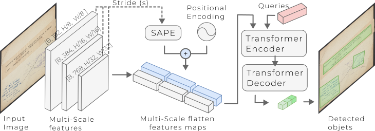
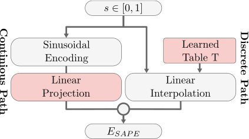

Abstract
Administrative stamps play a crucial role in the authentication, validation, and institutional identification of historical documents. However, their analysis remains challenging due to document degradation, shape variability, and non-standardized placement.
We introduce SA-DETR, a transformer-based framework for robust stamp detection in archival photographs. Beyond detection, stamps provide key insights into document provenance and circulation, enabling historians to reconstruct institutional workflows and archival trajectories.
To address strong scale variability, we propose a novel Scale-Aware Positional Encoding (SAPE), which models scale as a continuous signal rather than discrete levels.
+8% improvement over state-of-the-art methods on historical datasets
Method: Scale-Aware Detection Transformer
Modern DETR-like architectures such as DeepSolo rely on multi-scale feature pyramids to detect objects across a wide range of sizes. However, these approaches encode scale using coarse, discrete embeddings, which fail to capture the continuous scale variations inherent to historical documents.
To address this limitation, we introduce SA-DETR, a detection framework augmented with a novel Scale-Aware Positional Encoding (SAPE) module, which provides Transformer tokens with an explicit and continuous representation of scale.
Global Architecture

The model processes document images through a transformer-based detection pipeline, where multi-scale features are enhanced using continuous scale-aware embeddings.
Scale-Aware Positional Encoding (SAPE)
Unlike traditional methods that treat feature pyramid levels as independent entities, SAPE models scale as a continuous manifold, enabling smooth transitions across feature resolutions.

The SAPE embedding is constructed through two complementary components:
- Learnable scale-anchor interpolation to model global scale structure
- Sinusoidal projection to capture fine-grained scale variations
This hybrid formulation ensures a coherent integration of multi-resolution features, significantly improving robustness in degraded archival images.
Key Idea
Discrete Scale Encoding ❌ → Continuous Scale Modeling ✅
Instead of relying on discrete feature levels, SA-DETR models scale as a continuous signal, allowing smoother feature interaction and more accurate detection of irregular, faded, and multi-scale stamps in historical documents.
Results
SA-DETR achieves strong performance on challenging historical datasets such as Forbin and StaVer, outperforming both traditional detectors and transformer-based baselines.
State-of-the-art performance with +8% improvement
| Method | mAP | AP50 | AP75 |
|---|---|---|---|
| Faster R-CNN | 32.26 | 74.68 | 24.75 |
| RetinaNet | 30.72 | 72.51 | 23.15 |
| YOLOv8n | 33.86 | 74.29 | 27.57 |
| Deformable DETR | 27.55 | 66.34 | 19.55 |
| DeepSolo (Baseline) | 62.09 | 82.50 | 71.70 |
| Ours (DeepSolo + SAPE) | 64.24 | 83.80 | 73.90 |
These results demonstrate that modeling scale as a continuous signal significantly improves robustness in degraded archival documents, addressing a key challenge in large-scale historical analysis.

Citation
If you use this work, please cite:
@inproceedings{chelali2026sadetr,
title={A Scale-aware Vision Transformer-based Approach for Document Stamp Detection},
author={Chelali, M., Gosselet, S.-K., Cloppet, F., Kurtz, C., Bloch, I., Foliard, D.},
booktitle={Proceedings of ICDAR},
year={2026}
}